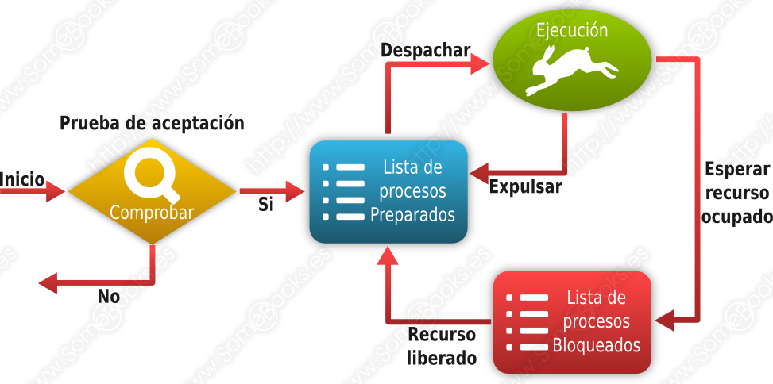

3. Gestió de Recursos
En aquest tema veurem en detall la gestió de recursos que realitza el sistema operatiu:
- Gestió del processador
- Gestió de la memòria
- Gestió d'Entrada/Sortida
- Gestió d'Arxius
3.1. Gestió del Processador
L'element del sistema operatiu que es fa càrrec de la gestió del processador és el planificador i les seues funcions son:
- Fer el canvi d'estat dels processos.
- Gestionar la cua d'espera de processos.
- Aplicar els algoritmes de planificació.
- Gestionar l'intercanvi de dades entre memòria i disc.
Comencem amb el concepte de proces.
3.1.1. Proces
La idea fonamental d'un sistema informàtic consisteix en un dispositiu que és capaç d'executar ordres agrupades en forma de programes. Quan un programa no està en execució, no serà més que un fitxer de dades en un mitjà d'emmagatzematge.
En aquest sentit, podem entendre el concepte de procés com un programa que s'està executant. No obstant això, una definició més acadèmica seria aquesta:
- Una unitat d'activitat que executa una seqüència ordenada d'instruccions, que disposa d'una sèrie de recursos assignats pel sistema i que es troba en un estat particular.
Un programa, entès com un fitxer que conté ordres, resideix a la memòria secundària de l'ordinador, mentre que un procés resideix a la memòria principal. Tot procés té associat un espai d'adreces a la memòria principal, on es guarden les pròpies instruccions del procés i les dades que maneja. A més, el sistema disposarà d'una Taula de processos on guarda la informació rellevant de cada procés:
- L'identificador del procés (PID, de l'anglès, Process IDentifier)
- L'estat del procés, és a dir, si està executant-se o no.
- La seva prioritat respecte als altres processos del sistema.
- La posició de memòria on es troba, entre altres.
Els sistemes operatius intenten resoldre de la millor manera possible les següents situacions sobre els processos:
- Oferir als processos els recursos que necessiten.
- Repartir el temps d'execució del processador entre diversos processos, de manera que estiga ocupat el major temps possible i permetent que tots ells tinguen un temps de resposta adequat.
- Facilitar la creació de processos per part de l'usuari i d'altres processos
- Facilitar la comunicació entre diferents processos.
3.1.3. Execució d'un procés
Important:
Perquè un procés s'execute, la seua seqüència d'instruccions ha de trobar-se en la memòria principal.
A més, en tots els sistemes operatius moderns, es va intercalant l'execució de diferents processos, de manera que s'alternen l'ús del processador.
- Nomenem multitasca o multiprogramació a la capacitat que tenen els sistemes operatius actuals d'alternar l'ús del processador entre diferents processos. Donada la velocitat a la qual funcionen els processadors, l'usuari té la sensació que els processos s'executen al mateix temps.
- Quan en un sistema informàtic disposem de diversos processadors, poden executar-se diversos processos al mateix temps. A aquesta tècnica la diem multiprocés o multiprocessament. Quan tots els processadors actuen en igualtat de condicions, parlem de multiprocés simètric o SMP (Symmetric Multi-Processing). Quan el sistema disposa de processadors amb funcions especialitzades, parlem de multiprocés asimètric o AMP (Asymmetric Multi-*Processing).
3.1.4 Estats d'un procés
- En execució: En aquest estat es trobarà el procés que ocupa l'atenció del processador en aqueix moment.
- Preparat: En aquest estat es troben els processos que no s'estan executant, però que podrien fer-ho en qualsevol moment.
- Bloquejat: En aquest estat estaran els processos que han sol·licitat algun servei del sistema operatiu i estan esperant una resposta.

El processador executa un codi que pertany a un mòdul del sistema operatiu, anomenat Distribuïdor (Dispatcher), cada vegada que un procés haja consumit el seu temps o haja sol·licitat algun servei pel qual haja d'esperar.
Així s'evita que un procés s'apropie del processador de manera indefinida.
Cada vegada que es crea un nou procés, aquest és situat en estat de Preparat.
Quan el procés que s'està executant és interromput, el Distribuïdor tria un nou procés entre els quals es troben en estat Preparat. L'estat del procés triat passa a ser En Execució mentre que el procés que abandona l'execució passarà a estat Preparat (si ha consumit el seu temps) o Bloquejat (si ha realitzat una petició al sistema).

Els processos que es troben en estat Preparat esperen el seu torn en una cua.
3.1.5 Canvi de context
Quan s'executa el mòdul del kernel que s'encarrega de parar l'execució d'un procés i fer els canvis necessaris perquè s'execute un procés diferent, es produeix un canvi de context, amb aquestes accions:
- Guarda en la memòria principal el valor dels registres del processador per al procés que s'estava executant.
- Recupera el valor dels registres del processador, des de la memòria principal, per al procés que pren el relleu. El procés triat dependrà del Planificador del sistema operatiu.
- S'executa la instrucció indicada en el Comptador de Programa, que forma part del context que acabem de recuperar i, per tant, serà la següent del nou procés.
3.1.6. Planificació de processos
Perquè un sistema multiprogramat siga eficaç necessita una Planificació de processos, anar assignant processos al processador al llarg del temps. Objectius:
- Rendiment: Tracta de maximitzar el nombre d'accions que es completen en un termini de temps determinat.
- Temps de resposta: El sistema ha de respondre a les sol·licituds dels usuaris en un temps adequat.
- Temps de retorn: El sistema ha d'oferir resultats dels processos per lots en un temps adequat.
- Equitat: Tots els processos han de ser considerats segons les seues característiques.
- Eficiència: S'ha d'aspirar al fet que el processador estiga actiu constantment.
Com cal esperar, el mòdul del sistema operatiu que s'encarrega d'aquesta tasca es denomina Planificador (en anglés, Scheduler).
Segons el disseny del sistema operatiu, el Planificador utilitzarà uns criteris o altres per a dur a terme la seua tasca. Aquests criteris reben el nom d'Algorismes de Planificació (o també, Polítiques de Planificació).
Vegem a continuació els principals algoritmes de planificació
Nota aclaridora:
Una política de planificació és no apropiativa (en anglés, non-preemptive) quan, una vegada que un procés pren el control del processador, no l'abandona fins que acaba o fins que es bloqueja. Serà apropiativa (en anglés, preemptive) quan el sistema pot interrompre el procés per a executar un altre diferent.
3.1.7. Algoritmes de planificació
FCFS (First Come First Served)
És emprat en processos per lots (sense intervenció de l'usuari) i és no apropiatiu. Els processos es van posant en cua segons arriben i se'ls assigna l'estat Preparat. Quan és assignat al processador, no l'abandona fins que acaba. Una dels seues avantatges principals consisteix en el fet que és un algorisme molt senzill d'implementar i també és fàcilment predictible. Entre els seus principals inconvenients podem esmentar que els processos llargs poden fer esperar molt als processos curts FCFS (First Come First Served) Exemple pràctic en el qual disposem de cinc processos que s'incorporen al sistema en moments successius i que tenen diferents temps de duració
SJF (Shortest Job First)
És emprat en processos per lots (sense intervenció de l'usuari) i és no apropiatiu. Els processos es van posant en cua segons arriben i se'ls assigna l'estat Preparat, però el Planificador tria el que té un menor temps previst d'execució.
SRTF (Shortest Remaining Time First)
SRTF (Shortest Remaining Time First) és un algoritme emprat en processos per lots (sense intervenció de l'usuari) i no apropiatiu. Els processos es posen en cua segons arriben i se'ls assigna l'estat Preparat. No obstant això, el Planificador tria el procés amb el temps previst més curt d'execució.

RR (Round Robin)
RR (Round Robin) s'utilitza en processos interactius (on intervé l'usuari) i és apropiatiu. Els processos es posen en cua segons arriben i se'ls assigna l'estat Preparat. El processador s'assigna a cada procés en ordre durant un període de temps anomenat "Quàntum", que és igual per a tots els processos.
Planificació per prioritat
La planificació per prioritat s'emplea en processos interactius i és apropiativa. Cada procés rep un nombre enter que representa la seva prioritat, on un nombre menor indica una prioritat més alta. Si es considera no apropiativa, funciona com l'algoritme "Primer el més curt" (SJF), però considera la prioritat en lloc de la durada.

3.1.8. Comunicació entre processos
Els sistemes operatius sovint executen diversos processos que han de comunicar-se per col·laborar en un objectiu comú.
Això es fa mitjançant funcions anomenades IPC (Inter-Process Communication) que faciliten l'enviament de missatges entre processos i la sincronització.
3.2. Gestió de Memòria
La gestió de memòria en un sistema operatiu es refereix a l'administració i control de la memòria del sistema. Això és essencial per garantir que els programes s'executen sense problemes i no hi haja conflictes en l'ús de la memòria. Aquests són els conceptes clau:
-
Assignació de Memòria: La gestió de memòria implica assignar espai de memòria a programes i processos. Això es fa per garantir que cada programa tinga suficient memòria per funcionar correctament.
-
Administració de l'Espai Lliure: El sistema operatiu realitza un seguiment de l'espai lliure en la memòria per saber on carregar nous programes o dades.
-
Protecció de la Memòria: Per evitar que un programa accedisca indegudament a la memòria d'altres programes, s'implementen mecanismes de protecció.
Hi ha dos esquemes clau en la gestió de memòria, la paginació i la segmentació, que s'utilitzen juntament amb el concepte de memòria virtual.
3.2.1. Gestió de Memòria per a un Sol Proces
Quan es tracta d'un sol procés en execució, la gestió de memòria implica assignar i alliberar memòria dinàmicament segons les necessitats del procés. Aquest enfocament s'utilitza típicament en sistemes operatius multitasca, on diversos processos competeixen per la memòria. Els conceptes clau inclouen:
-
Assignació Dinàmica: La memòria s'assigna al procés a mesura que la necessita. Això permet un ús eficient de la memòria, però requereix una gestió cuidadosa per evitar la fragmentació.
-
Alliberament de Memòria: Quan un procés ja no necessita memòria, aquesta es libera i es torna a posar a disposició d'altres processos.
3.2.2. Gestió de Memòria amb Particions Fixes
En la gestió de memòria amb particions fixes, la memòria es divideix en seccions de grandària uniforme anomenades particions. Cada partició s'assigna a un procés en particular. Els aspectes clau són:
-
Assignació de Particions: Cada procés es carrega en una partició de grandària predeterminada. Això pot portar a un malbaratament de memòria si els processos tenen diferents grandàries.
-
Fragmentació Interna: Les particions poden tenir espai no utilitzat, el que es coneix com fragmentació interna.

3.2.3. Gestió de Memòria amb Particions Variables
La gestió de memòria amb particions variables permet assignar memòria de manera més flexible, ja que les particions poden tenir grandàries diferents segons les necessitats dels processos. Aspectes importants:
-
Assignació Flexible: Els processos s'assignen a particions segons la seua grandària, minimitzant la fragmentació interna.
-
Fragmentació Externa: Tot i reduir la fragmentació interna, pot haver-hi fragmentació externa, on hi ha prou memòria total, però no es pot assignar a un procés degut a la distribució de particions.
Fragmentació
- Fragmentació Externa: Espai de la memòria que hi ha fora de les particions que no s'utilitza.
- Fragmentació Interna: Espai que hi ha dins de les particions que no s'utilitza.
3.2.4. Memòria Virtual
Tots els mètodes estudiats fins al moment suposen que un procés ha d'estar completament carregat en memòria per a poder executar-se. No obstant això, el model de Memòria virtual aplica els mecanismes d'intercanvi que ja hem esmentat perquè les parts d'un procés que no estiguen sent utilitzades en un moment concret, puguen residir en memòria secundària. D'aquesta manera, s'allibera una major quantitat de memòria principal per a albergar un nombre de processos superior. A més, aquest plantejament ens permetria executar processos que foren més grans que la memòria física.
Quan el procés fa referència a una direcció de memòria que no resideix en memòria principal, es produeix una fallada de pàgina. En aqueix moment, el sistema localitza un marc de pàgina lliure i càrrega en ell la pàgina necessària. Si no hi haguera marcs lliures, caldria aplicar un algorisme de substitució per a triar la pàgina d'aquest o un altre procés que ha d'abandonar la memòria principal per a deixar espai a la qual ha de carregar-se.
Mentre dura tota aquesta operació, el procés que va originar la fallada de pàgina roman en estat Bloquejat.
Per a saber quines pàgines es troben en memòria principal i quins estan en el disc, la taula de pàgines pot incloure un bit de presència.
Aquest tipus d'esquemes aconsegueixen que la memòria s'aprofite molt millor. A més, en poder carregar més processos en la mateixa quantitat de memòria, el processador estarà més ben aprofitat.
No obstant això, si es produeix una situació que provoque una quantitat elevada de fallades de pàgina, els accessos a disc es multiplicaran i el rendiment pot caure de manera considerable. Aquest fenomen rep el nom de hiperpaginació.
3.2.5. Paginació
La paginació divideix la memòria en blocs de grandària fixa anomenats "pàgines". Cada procés rep pàgines a la memòria principal segons les seues necessitats. Això té avantatges, com un ús eficient de la memòria i una administració més senzilla. No obstant això, pot haver-hi fragmentació interna i requereix una taula de pàgines per fer un seguiment de les ubicacions.

Aspectes dels marcs de pàgina
Un aspecte important és la mida dels marcs de pàgina:
- Amb marcs de pàgina petits, hi ha poca fragmentació interna i taules de pàgines grans.
- Amb marcs de pàgina grans, hi ha més fragmentació interna i taules de pàgines petites.
3.2.6. Segmentació
La segmentació divideix la memòria en segments lògics de grandària variable per reflectir l'estructura lògica d'un programa. Ofereix flexibilitat, però pot causar fragmentació externa. Es necessita una taula de segments per rastrejar els segments a la memòria.
Un programa es considera un conjunt d'elements lògics de mides variables.
La segmentació planteja que, en compilar un programa, aquest es converteixi en un conjunt de segments als quals se'ls assignarà un identificador, un punt d'inici i una mida.

3.2.7. Paginació + Segmentació
Quan els segments són grans, és comú utilitzar una combinació de paginació i segmentació. La idea és dividir cada segment en pàgines de longitud fixa per a la seva ubicació a la memòria.
3.2.8. Control d'ús de memòria
Per gestionar l'ús de memòria, hi ha dos enfocaments generals:
Mapes de bits Els mapes de bits divideixen la memòria en unitats d'assignació, que poden ser des d'unes quantes paraules fins a diversos kilobytes. A cada unitat d'assignació li correspon un bit del mapa de bits. El bit és 0 si la unitat d'assignació està lliure i 1 si està ocupada (o viceversa).
Un mapa de bits pro porciona una manera senzilla de portar el control de les paraules de memòria utilitzant una quantitat de memòria fixa perquè la seua grandària només depén de la grandària de la memòria i de la grandària de la unitat d'assignació. El problema principal amb ell és que una vegada que s'ha decidit portar a la memòria un procés de k unitats, el gestor de memòria ha d'examinar el mapa de bits a la recerca d'una seqüència de k bits a 0 consecutius. Buscar en el mapa una seqüència d'una certa longitud és una operació lenta (perquè la seqüència en el mapa pot travessar fronteres de paraula); aquest és un argument en contra de l'ús dels mapes de bits.

Llistes Enllaçades
Una altra manera de portar el control de la memòria és mantindre una llista enllaçada de blocs de memòria assignats i lliures, on cada bloc és un procés o un buit entre dos processos.
La memòria es representa com una llista enllaçada. Cada node de la llista representa un bloc, especificant el tipus de bloc [buit (H) o procés (P)], la seua adreça de començament, la seua longitud i un punter al següent node
Les llistes enllaçades mantenen registres de blocs de memòria assignats i lliures, on cada bloc representa un procés o un espai buit entre processos.

3.3. Gestió d'E/S
El sistema operatiu haurà de controlar els dispositius, detectar interrupcions i manejar errors. També ha de proporcionar una interfície entre els perifèrics i la resta del sistema intentant que el seu ús siga el més estàndard possible.
En un sistema informàtic modern podem trobar molts dispositius d'entrada/eixida diferents. No obstant això, un dels objectius del disseny d'un sistema operatiu és que l'usuari, o el programador, els perceben d'una forma semblant, sense importar els detalls tècnics que els distingeixen ni la diferència quant a la complexitat del dispositiu.
3.3.1. Tècniques de gestió d'E/S
Un ordinador pot utilitzar diferents tècniques per a interactuar amb els controladors d'entrada/eixida. Com ja vam fer en l'apartat anterior, nomenarem les més representatives de menor a major sofisticació:
- Entrada/eixida programada: El processador executa una instrucció d'un procés que sol·licita una operació d'entrada/eixida. Es realitza el requeriment al mòdul d'entrada/eixida corresponent, i queda en espera de rebre la resposta.e/s programada

-
Entrada/eixida controlada per interrupcions: El processador executa una instrucció d'un procés que sol·licita una operació d'entrada/eixida. Llavors, el procés espera en estat Bloquejat i el processador continua amb l'execució d'altres instruccions. Quan es completa l'operació, el mòdul d'entrada/eixida genera una interrupció per al processador i aquest executa el mòdul del sistema operatiu que posa al procés en estat Llest.
-
Accés directe a memòria (o DMA, de l'anglés Direct Memory Access): L'equip disposa d'un mòdul DMA autoritzat per a accedir directament a la memòria RAM. D'aquesta manera, en lloc d'encarregar-se el processador de controlar cada operació individual d'entrada o eixida, es confia en el mòdul DMA perquè execute diverses operacions consecutives posant (o obtenint) la informació directament en la memòria RAM. El mòdul DMA interromp al processador només quan han acabat totes les operacions que tenia encarregades.

- Processadors d'entrada/eixida (o IOP): L'equip disposa d'un processador complementari amb la capacitat d'executar les operacions d'entrada/eixida, obtenint-les directament de la memòria principal. També pot utilitzar tècniques de DMA per a llegir o escriure les dades en la memòria. D'aquesta manera, el processador principal queda alliberat d'aquesta mena d'operacions.

3.3.2. Emagatzament intermedi
Quan és necessari llegir un gran volum de dades de l'emmagatzematge secundari, el procés anirà emetent sol·licituds de blocs de manera consecutiva, que anirà processant d'un en un. Com l'emmagatzematge secundari és molt més lent, entre una lectura i una altra el procés, probablement, romandrà en estat Bloquejat. Una vegada completada la lectura, haurà d'esperar en la cua de processos en estat Llest fins que el Planificador ho trie per a la seua execució.
Per a evitar aquesta situació, s'utilitza una tècnica denominada buffering, que consisteix en el fet que el sistema operatiu realitze les lectures abans que es produïsca la sol·licitud, emmagatzemant-les en una àrea de la memòria principal que rep el nom de Buffer
Una cosa semblant pot fer-se quan disposem de dispositius molt lents que, no obstant això, poden rebre grans volums de dades. En aquests casos, pot utilitzar-se una memòria intermèdia situada en un emmagatzematge extern (típicament, un disc) i anar enviant les dades a poc a poc al dispositiu extern.
Aquesta tècnica, encara que és semblant al buffering, rep el nom de spooling i la memòria intermèdia rep el nom de spool (de l'anglés, Simultaneous Peripheral Operations On-Line). És una tècnica que s'utilitza habitualment amb les impressores.
3.4. Gestio d'Arxius
El sistema operatiu és responsable de les següents activitats relacionades amb la gestió de discos:
- Creació i administració de l'estructura lògica (Sistema d'arxius).
- Administració d'espai lliure.
- Assignació d'emmagatzematge.
- Planificació del disc: Decideix a quin procés se li dona servei de disc.
El Sistema d'arxius (en anglés, filesystem) és el component del sistema operatiu que s'encarrega d'organitzar la manera en què es guarden les dades dins dels dispositius d'emmagatzematge secundari. Per a dur a terme la seua tasca, des d'un punt de vista lògic utilitza dos conceptes diferents:
- Arxiu (o fitxer): és una sèrie de bytes emmagatzemats en un dispositiu d'emmagatzematge extern que, en conjunt, formen una unitat lògica. Cada arxiu sol estar identificat en el sistema mitjançant un nom i una extensió. Normalment, el nom serveix per a identificar el contingut de l'arxiu i l'extensió per a identificar el tipus al qual pertany.
- Carpeta (o directori): és una manera d'agrupar arxius, segons el criteri de l'usuari, per a facilitar la seua organització. Igual que els arxius, les carpetes tenen un nom que les identifica. Per a un sistema d'arxius, una carpeta no és més que un arxiu que conté informació sobre la manera en què s'organitzen les dades. Com en el cas dels arxius, per a evitar ambigüitats, no pot haver-hi dues carpetes amb el mateix nom en la mateixa ubicació.
Com podem suposar, la unitat d'informació amb la qual treballa un sistema d'arxius és, precisament, l'arxiu.
És freqüent que cada família de sistemes operatius tinga els seus propis sistemes d'arxius. Per exemple, a continuació relacionem els més coneguts:

Un sistema d'arxius s'encarregarà d'aspectes com:
- Organitzar de manera lògica els sectors del dispositiu per a constituir arxius i directoris
- Assignar espai d'emmagatzematge als arxius i mantindre el control sobre els sectors que pertanyen a cada arxiu.
- Oferir els mecanismes que permeten crear nous arxius, canviar-los el nom i/o la ubicació, modificar el seu contingut o eliminar-los.
- Mantindre l'estructura jeràrquica del sistema de directoris.
- Controlar l'accés segur als arxius. És a dir, que només puguen accedir a les dades els usuaris autoritzats
- Controlar quins sectors romanen disponibles per a ser ocupats en qualsevol moment.
3.4.1. Atributs i permisos
El sistema operatiu ha de tindre la capacitat de controlar quin usuari pot accedir a cadascun dels seus recursos (directoris, impressores, connexions de xarxa, etc.). Per a aconseguir-ho, cadascun d'aquests recursos sol tindre associada una Llista de Control d'Accés o ACL (de l'anglés, Access Control List), en la qual es relacionen els diferents usuaris que poden accedir i baix quines condicions (lectura, escriptura, execució, …)
D'altra banda, un determinat arxiu pot tindre associats diferents atributs, que informen sobre unes certes característiques de l'arxiu o de la manera en què el sistema operatiu ha de tractar-lo. Així, un arxiu pot tindre atributs com: directori, ocult, de sistema, xifratge, etc
3.4.2. Organització del sistema d'arxiux
Hui dia, pràcticament tots els sistemes d'arxius que podem trobar organitzen els arxius de manera jeràrquica, permetent la creació d'un arbre de directoris que faciliten l'organització i classificació del seu contingut.
A més, per a evitar ambigüitats, els sistemes operatius no permeten que, dins del mateix directori, existisquen dos arxius amb el mateix nom.

3.4.3. Rutes
Per a expressar la ubicació exacta d'un arxiu o un directori s'utilitza la seua ruta (en anglés, path). Encara que la manera d'expressar una ruta pot canviar segons el sistema operatiu que estiguem usant. En general es formen indicant la llista jeràrquica de directoris que representa el camí que hem de recórrer per a arribar fins a un arxiu o directori. En aqueixa relació, l'últim element serà el propi arxiu o directori referenciat.
En escriure una ruta, haurem d'utilitzar un caràcter que separe cada element del següent. Aquest caràcter separador sol ser una barra invertida () en els sistemes Microsoft i una barra inclinada (/) en la família de sistemes Unix, com és el cas de GNU/Linux.
Altres caràcters especials que podem utilitzar en una ruta són els següents:
- . (un punt): Fa referència al directori en el qual ens trobem (també anomenat directori actual)
- .. (dos punts): Fa referència al directori que es troba, jeràrquicament, just damunt del directori en el qual ens trobem (també anomenat directori pare)
- ~ (una virgulilla): En sistemes de la família Unix, com GNU/Linux, fa referència al directori personal de l'usuari que escriu la ruta.
Existeixen dues maneres diferents d'escriure rutes:
- De manera absoluta: Una ruta d'aquest tipus farà referència a un arxiu o directori a partir del directori arrel.
- En els sistemes de la família Unix, una ruta absoluta comença per una barra inclinada. Per exemple:
- /home/Alicia/Documentos/informe.odt
- En els sistemes Microsoft, és necessari començar la ruta absoluta amb la lletra d'unitat a la qual fa referència, seguida de dos punts i una barra invertida. Per exemple:
- c:\Usuaris\Alicia\Documentos\informe.odt
- En els sistemes de la família Unix, una ruta absoluta comença per una barra inclinada. Per exemple:
- De manera relativa: Una ruta d'aquest tipus farà referència a un arxiu o directori prenent com a punt de partida el directori en el qual ens trobem. Per exemple:
- ../../Jacinto/Documents/memòria.odt
- (com pot apreciar-se, l'exemple és vàlid en sistemes de la família Unix, però bastaria amb canviar el sentit de les barres perquè fora vàlid en sistemes Microsoft)